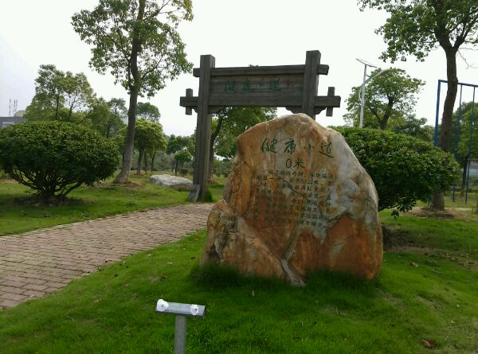
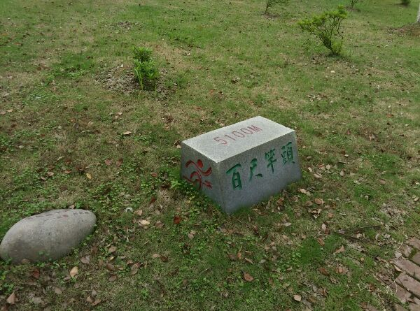
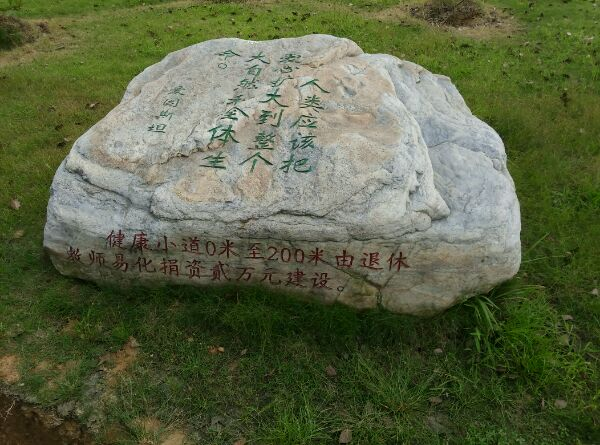
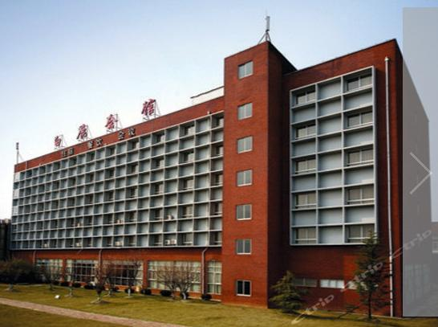
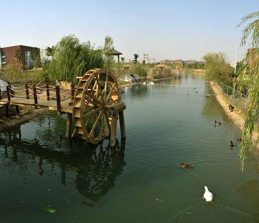
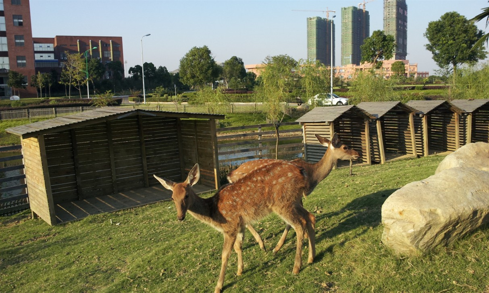

健康小道全长5000多米，东起于正大门，起始处设0米路标，由我国著名书法家、江西师范大学杰出校友沈鹏先生题写“健康小道”四个大字铭刻于上。小道沿途设置了休闲椅、运动器材，每隔100米安置一块文化石。后勤集团公司出资60万，购置了170盏太阳能路灯，以每30米左右间距，布满小道。健康小道路面全部由红、黄、青三色砖铺设。特别是健康小道创造性地从鹅湖湖面绿荷丛中架浮桥通过，增添了别样风情。
健康小道是七十周年校庆建设规划项目，得到了许多校友和一些单位的认捐。

小道路名“健康小道”四个大字，由我国著名书法家、该校杰出校友沈鹏先生所题写。
为贯彻低碳生态理念，江西师大后勤集团公司出资60万，购置了170盏太阳能路灯，光源高度5米，以每30米左右间距，布满小道。太阳能路灯以太阳光为能源，无需复杂昂贵的管线铺设，安全节能无污染，无需人工操作，工作稳定可靠，节省电费，免维护。

白鹿会馆（1）

江西师大白鹿会馆(南昌)坐落在南昌市城东的江西师范大学瑶湖校区植物园内，东临有着天上人间、地上瑶池之美誉的瑶湖，南与江西省奥林匹克活动中心遥相呼应，西、北面向绿意盎然的大学校园，是一座花园式酒店。
白鹿会馆（2）

会馆拥有各类客房91间，其中豪华套间5间、普通套间5间、标准间77间、商务单间4间，可同时接待近200位贵宾入住。客房色彩柔和，格调高雅，其中60%客房面对风景秀美的瑶湖，所有客房均配有国际互联网接口、卫星电视、办公用具等，为宾客提供居家式的服务。
餐饮拥有9个中式包厢，一个西式餐厅和一个可容纳300人同时用餐的大餐厅，为宾客提供包席、自助、散点等服务，是宾客与家人、朋友共享美好时光的理想场所。会馆拥有可容纳20-600人不同规格的会议室，均配备多媒体演示、同传鄱译等先进设备。同时，拥有室内网球场、健身房、多功能厅、赏鱼池、商务中心、商场、免费停车等配套设施。